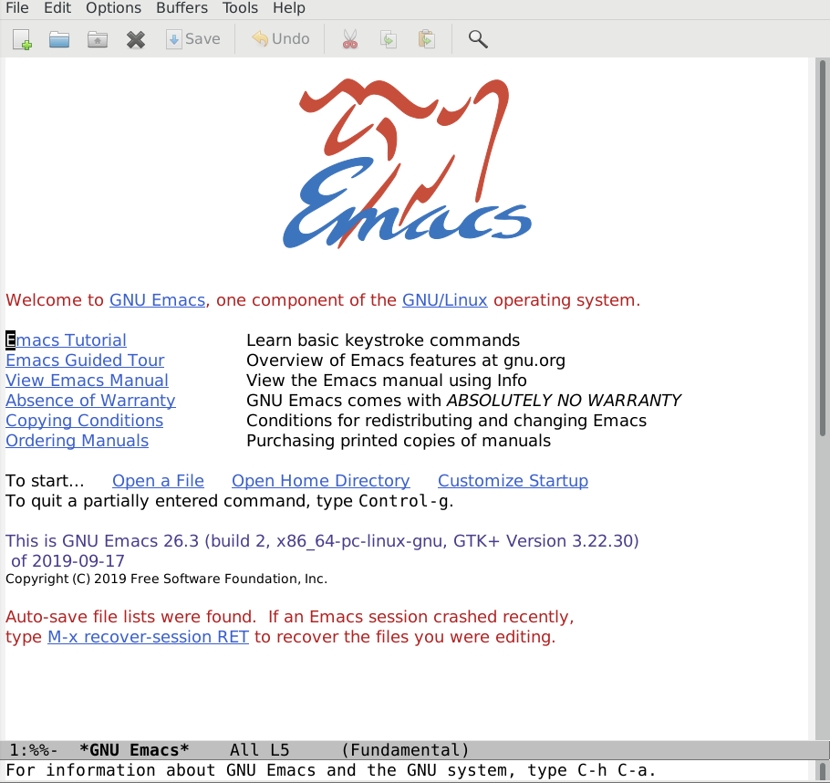

Common Lisp and Emacs - digikar99.github.io
Table of Contents
1. Why Emacs (or Vi) in [insert year]?
If something is not discouraged by a community years after its first release, then that something must have some merit subject to your own scrutiny. Vi is ubiquitous, and its modal-editing is a boon for editing - not necessarily writing - code. Emacs is extensible, and its community has provided Extensible VI Layer to provide the best of Emacs and Vi.

This is emacs.

This also is emacs.

This also is emacs.
And if you ever feel annoyed by constantly switching between insert and edit mode in Vi, feel free to try out smart-god-mode. The only thing beyond it (barring minor tweaks) would be a brain-computer-interface itself.
2. Can Emacs substitute my IDE?
If you know why exactly do you need the IDE, then, no. If you actually use the PyCharm or IntelliJ IDEA features dedicated to those languages, then, no, emacs - in my very limited experience - does not replace a full-blown IDE. But, you could always ask a community.
Fortunately so far, I have had the luxury to stick with Common Lisp and there, Superior Lisp Interaction Mode for Emacs (SLIME) absolutely blows most things out of the water.
3. Recommended Resources to start with Common Lisp
4. Do I have to learn Emacs to learn Common Lisp?
If you are in it for the long haul, yes. But, something like emacs-noob/slime-company-modern can provide familiar (non-emacs/vi) key-bindings, so that you can focus on Common Lisp first, and then on Emacs.
5. Some projects you have done / are working on
All of these are immature projects. Wait for another 5-10* years to test their maturity.
With Emacs, there is
- smart-god-mode: if you'd wish to do me or emacs community a favour - or want to tinker around in emacs, look into merging it into its original god-mode repository
- emacs-noob: a simplified starter kit for emacs; you should check out awesome-emacs before sticking with it though! Again, here too, you could look into improving the code / repository structure by implementing DRY-principles while keeping the usage as simple as possible (drag 'n drop).
With Common Lisp, there is
- py4cl2: a bunch of incompatible changes and improvements over the original py4cl; the goal is to enable the use of python libraries in common lisp in non-performance-intensive use cases. compared to py4cl, py4cl2 is still immature; like most things Common Lisp, I'll let time decide when it becomes mature enough.
- polymorphic-functions: a library that intends to bring type-based adhoc, subtype as well as parametric polymorphism to common lisp; yeah common lisp does already have a super neat class-based polymorphism known as CLOS with a MOP, and a few helper libraries; but I and a few others have wished for type-based polymorphism.
- dense-arrays: a numpy-like array object for common lisp
- numericals: a simd-based basic math library for common lisp
- common-lisp-libraries.readthedocs.io: an attractive documentation site for some of the defacto common lisp libraries
*If 5-10 years sounds like too much, then, welcome to the world of Common Lisp :). This language was ANSI standardized in 1994, which means if you stuck to the ANSI standard (or perhaps the then defacto libraries), then code written in the year 2000 should still be working in 2020. Well, that is in theory; in practice, I still lack much experience.